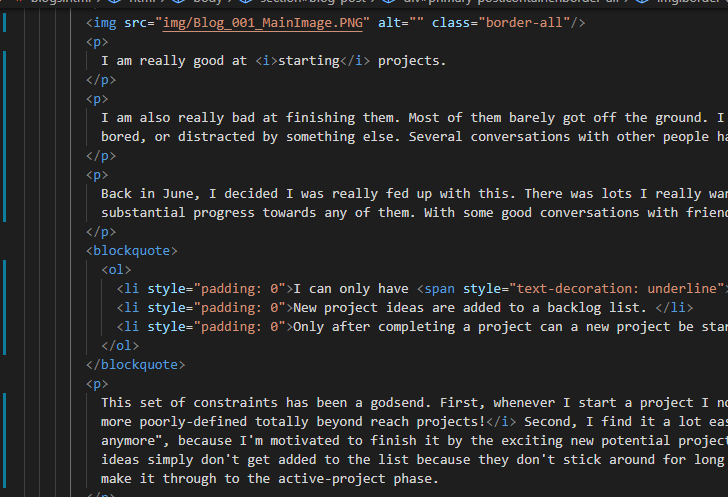

Project 005 - Build a website
Published on Tuesday, 08, September, 2020Where Josh shows off his amazing HTML and CSS Skills (/sarcasm).

I am really good at starting projects.
I am also really bad at finishing them. Most of them barely got off the ground. I get excited at the start of the project, then by 30% of the way through I'm bored, or distracted by something else. Several conversations with other people have told me I'm not alone in this.
Back in June, I decided I was really fed up with this. There was lots I really wanted to learn & make, but I rarely could keep focus enough to actually make substantial progress towards any of them. With some good conversations with friends, I implemented a new project system with three simple rules:
- I can only have three projects active at any one time.
- New project ideas are added to a backlog list
- Only after completing a project can a new project be started.
This set of constraints has been a godsend. First, whenever I start a project I now need to define pretty clearly what completing that project means: No more poorly-defined totally beyond reach projects! Second, I find it a lot easier to get over that hump of "I don't want to be doing this project anymore", because I'm motivated to finish it by the exciting new potential projects. Finally, it helps me contain my overexcitable brain; most new project ideas simply don't get added to the list because they don't stick around for long enough for me to get round to them; only the projects I really want to do make it through to the active-project phase.
There's little point making projects if you can't show them off however. Project 005 has therefore been to make a homepage so I can actually show off some of the things I work on.
This project involved me building a website from absolute scratch. No pre-made themes, no download this tool that sets everything out for you, just a new file called index.html, a text editor, and a bunch of html & CSS. The website you are on is the result of that project.
I'm actually pretty happy with the result! It's fully responsive (it'll look different on mobiles and tablets, try changing the size of the window to see!), the rough theme (lots of white with strong black lines) is...borrowed, but was all implemented in html & css.
 That isn't to say that this website is great. There's a lot of stuff wrong with it. For one, I still write all of the blog content directly into the html itself, so having some kind of content management system might be nice. Additionally, the structuring of some of the pages is a bit poor, and I can imagine this site is hellish to look at if you're in a dark environment. Still, these fixes are for another project. For now, I'm happy with it.
Of course, this wasn't done from zero knowledge. Project 004 was going through the excellent Udemy course run by Brad Traversy, Modern HTML & CSS
Next up, I've got a fun new plan for the arduino. My pervious arduino project, project 003, involved a light sensitive lamp, but this next project will involve something a bit more out there...
The Skeletons by the way were demanded by Chris.
Like it?
Hate it?
Let me know!